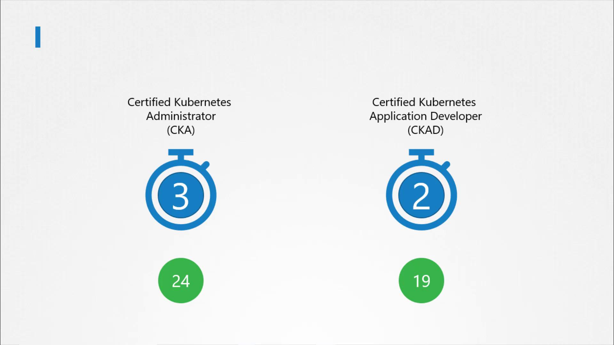
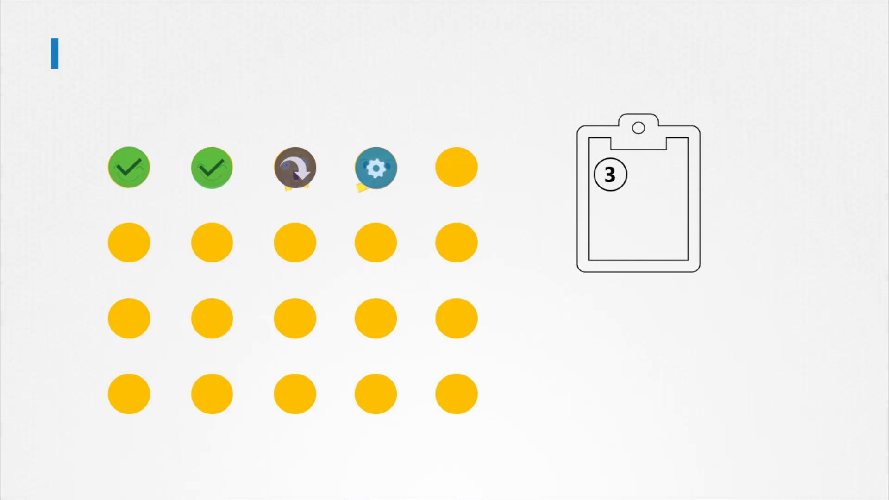
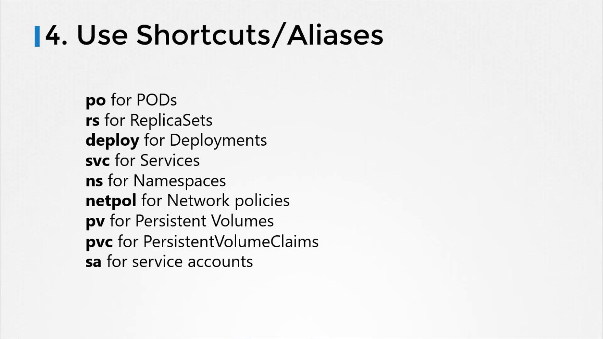

🛸 Time Management
Documentation Index
Fetch the complete documentation index at: https://notes.kodekloud.com/llms.txt
Use this file to discover all available pages before exploring further.
Time Management
This article explores effective time management strategies for candidates preparing for Kubernetes certification exams.
Hello and welcome. In this lesson, we’ll explore effective time management strategies specifically designed for practical certification exams such as the Kubernetes certification exams. Many candidates struggle with completing all the questions within the allotted time, so this guide offers practical tips to help you efficiently navigate and manage your exam.
My name is Mumshad Mannambeth, and throughout this lesson, I’ll share strategies that are applicable across various practical exams. Currently, Kubernetes certification exams typically allocate two to three hours for exam completion. For example, the Certified Kubernetes Administrator (CKA) exam provides three hours to answer 24 questions, whereas another exam might offer two hours with 19 questions.

Due to the limited time, it is crucial to manage your exam effectively. During the test, you will encounter a mix of very easy, moderately challenging, and unfamiliar questions. Remember, your goal is not to answer every question perfectly but to secure a score that meets or exceeds the minimum required to pass. It is essential to attempt all questions and avoid spending too much time on any one, especially the challenging ones.
Key Time Management Strategies
1. Attempt Every Question
Since you can answer the questions in any order, start by answering the easier questions first. Skipping the difficult ones initially allows you to build confidence and secure marks. Once you have completed the simpler questions, you can return to those you initially skipped if time permits.
2. Don’t Get Stuck on a Single Question
Even if a question appears simple, avoid spending too much time if you encounter an error. For instance, consider the following scenario:
kubectl create -f deployment-definition.yml
error: unable to recognize "deployment-definition.yaml": no matches for kind "deployment" in version "apps/v1"
If you see an error like this and cannot quickly troubleshoot (due to a typo or minor mistake), mark the question for later review and move on. Don’t let one problem eat up valuable time.
A recommended strategy is:
- Start with the easiest question.
- If a question seems too challenging or time-consuming, mark it for review and continue with the next.
- If an attempt fails more than once, do not linger—move on to secure other marks.

3. Master YAML Proficiency
Being comfortable with YAML is essential. Practice creating and troubleshooting YAML files ahead of time. During the exam, repeatedly checking every line for indentation or structure will cost you precious time. Focus on getting the structure and required contents correct rather than perfect formatting.
Below is an example of a well-structured YAML file for creating a Kubernetes Deployment:
apiVersion: apps/v1
kind: Deployment
metadata:
name: myapp-deployment
labels:
app: myapp
type: front-end
spec:
replicas: 3
selector:
matchLabels:
app: myapp
type: front-end
template:
metadata:
name: myapp-pod
labels:
app: myapp
type: front-end
spec:
containers:
- name: nginx-container
image: nginx:1.7.1
Even if your YAML file isn’t perfectly formatted, as long as it successfully creates the intended Kubernetes object, you’re on the right track.
4. Use Shortcuts and Aliases
During the exam, leveraging shortcuts can significantly speed up your work. Here are some common alias names to practice:
- po for pods
- rs for ReplicaSets
- deploy for Deployments
- svc for services
- ns for namespaces
- netpol for Network Policies
- pv for Persistent Volumes
- pvc for Persistent Volume Claims
- sa for service accounts
These aliases might seem minor, but over the duration of the exam, they can save you valuable seconds that add up to extra minutes.

Final Thoughts
Effective time management during Kubernetes certification exams is about balancing speed and accuracy. By attempting every question, not getting bogged down by a single problem, mastering YAML, and utilizing shortcuts, you can maximize your exam performance and improve your chances of success.
If you have any additional strategies or tips on time management during practical exams, please feel free to leave a comment below. Thank you for reading, and best of luck on your exams!
Remember that practice and preparation are key to success. Rehearse these strategies in your mock exams and adjust them according to your personal strengths and weaknesses.
Original Title: Time Management
يمكنك استخدام الزر أدناه للعودة للقائمة.